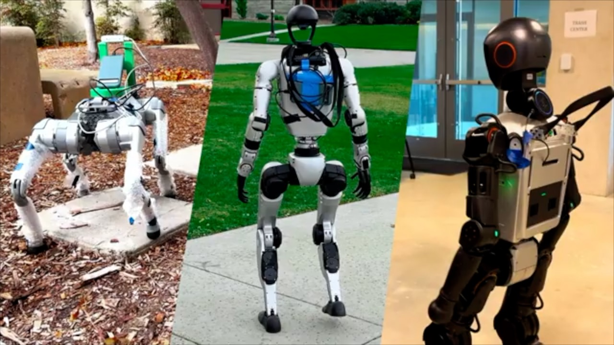
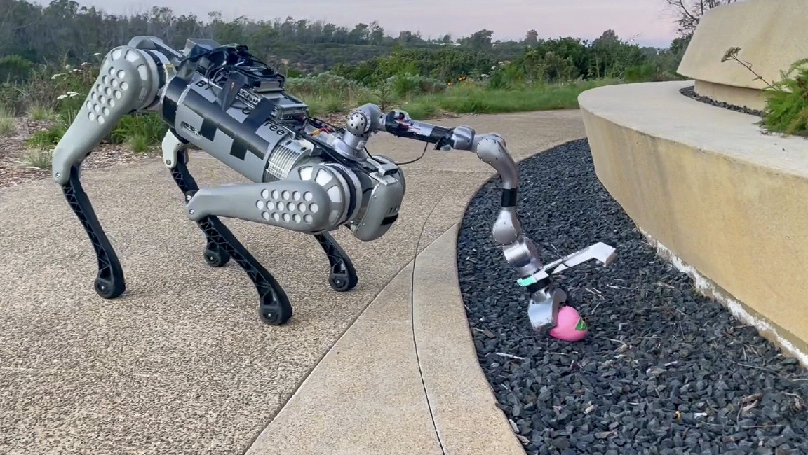
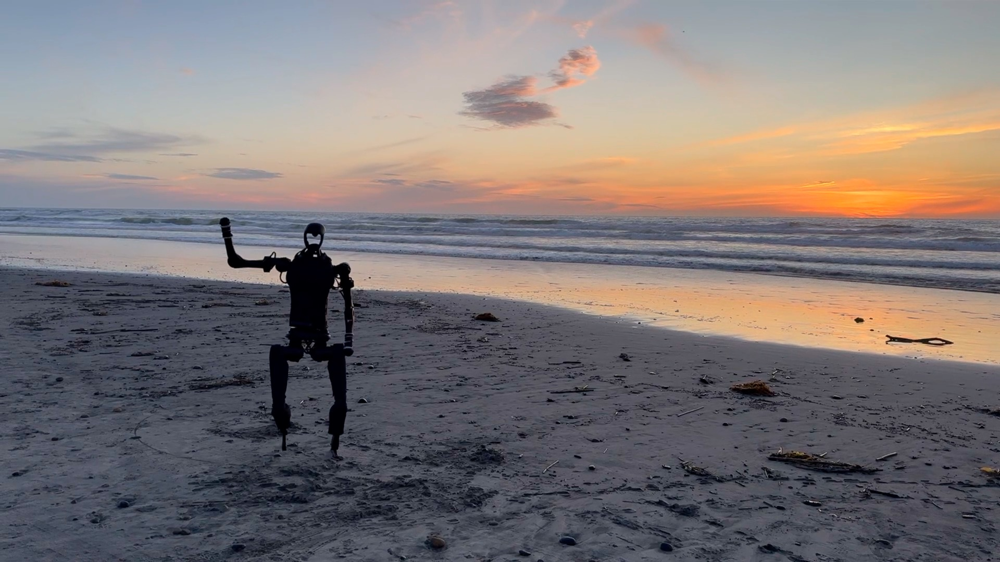
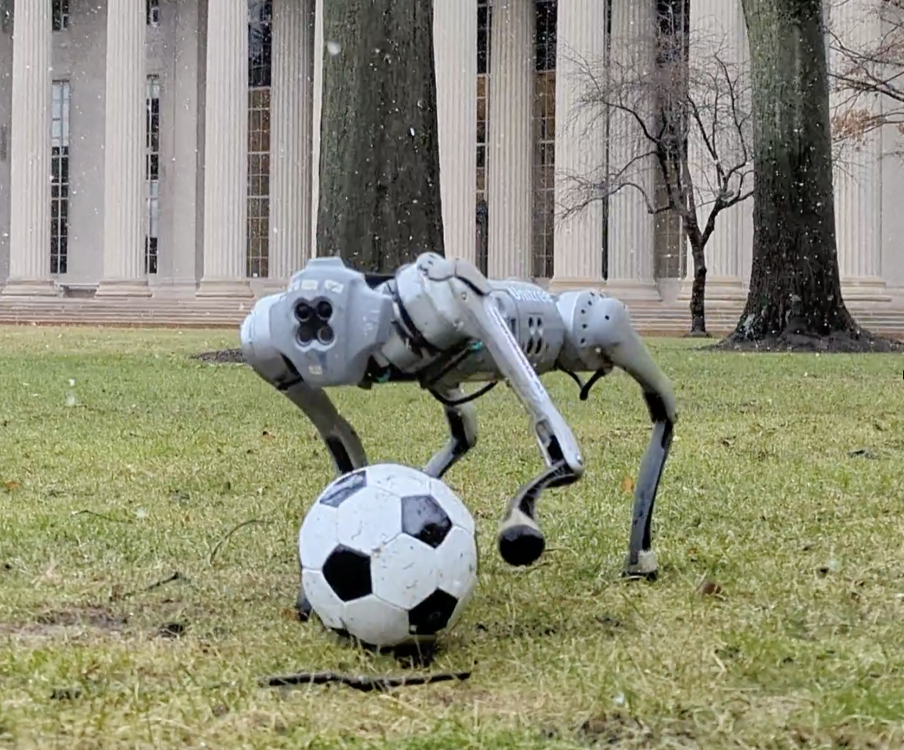

|
I am a PhD student at UC San Diego with Prof. Xiaolong Wang. Before that, I was a visiting researcher at MIT CSAIL with Prof. Pulkit Agrawal. I received an MEng in Mechnical Engineering from UC Berkeley in 2022 advised by Prof. Koushil Sreenath, and BEng in EECS from Nankai University in 2021 in close collaboration with Prof. Juanjuan Zhang. Email / Resume / Google Scholar / Twitter |
{kind=link}
|
I am interested in robotics, machine learning and reinforcement learning. |
|  |
An-Chieh Cheng*, Yandong Ji*, Zhaojing Yang*, Zaitian Gongye, Xueyan Zou, Jan Kautz, Erdem Biyik, Hongxu Yin†, Sifei Liu†, Xiaolong Wang† Arxiv, 2024 paper / project page |
|  |
Minghuan Liu*, Zixuan Chen*, Xuxin Cheng, Yandong Ji, Rizhao Qiu, Ruihan Yang, Xiaolong Wang CoRL, 2024 paper / project page |
|  |
Xuxin Cheng*, Yandong Ji*, Junming Chen, Ruihan Yang, Ge Yang, Xiaolong Wang RSS, 2024 paper / project page / UC San Diego Today Humanoid robot tracking root movement and expression goal with whole-body controller. |

|
Tifanny Portela, Gabriel B. Margolis, Yandong Ji, Pulkit Agrawal ICRA, 2024 paper / project page Learning to control the force applied by a legged robot's arm for compliant and forceful manipulation. |

|
Gabriel B. Margolis, Xiang Fu, Yandong Ji, Pulkit Agrawal CoRL, 2023 paper / project page Learn to see how terrains feel by collecting self-supervised data with information-maximizing motor skills. |
|  |
Yandong Ji*, Gabriel B. Margolis* , Pulkit Agrawal International Conference on Robotics and Automation (ICRA), 2023 paper / project page / MIT homepage spotlight / MIT News / Boston.com / WHDH / IEEE Spectrum / Business Insider Dynamic object manipulation with legs using onboard computation and sensing. |

|
Yandong Ji*, Zhongyu Li*, Yinan Sun, Xue Bin Peng, Sergey Levine, Glen Berseth, Koushil Sreenath IROS, 2022, (Best RoboCup Paper Award Finalist) project page / arXiv / TechXplore Honing soccer shooting skills in the real world |

|
Yandong Ji, Bike Zhang, Koushil Sreenath IEEE CASE, 2021 project page A decentralized payload manipulation system in simulation |

|
Wei Wang, Jianyu Chen, Yandong Ji, Wei Jin, Jingtai Liu, Juanjuan Zhang IEEE Transactions on Industrial Informatics, 2020 Systematic evaluation of exoskeleton assistance performance based on EMG metrics |
|
|
|
Reviewer CoRL, RA-L, Soft Robotics, IROS, ICRA, EMNLP |
|
Designed and sourced code based on Jon Barron's website. |